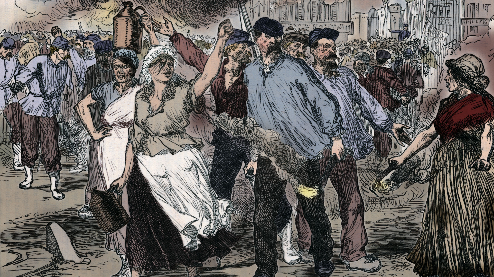

What was the impact of the Paris Commune?
The Paris Commune was a glipse into what a functioning left-wing society would have looked like. The Paris Commune would go on to inspire nearly every single socialist revolution onwards, and taught them many lessons to help succeed.
Many leading leftist thinkers used the Paris Commune as an example of what a socialist society should look like, but many also had criticisms of the Commune. One of the biggest criticisms was on the execution of captured prisoners, as many felt that the executions stained the image of the Commune.
Another criticism was the fact that the Communards let the Bank of France operate, which helped give the Third Republic precious time and money to organise a fighting force to take back Paris and ultimately end the Commune.
After the Commune, there was a split between the Marxists and the Anarchists in the First International due to the actions that took place at the Paris Commune; the Marxists believed that the Commune should have placed greater emphasis on the military to defend itself, while the Anarchists believed that the Commune should have set an example and achieve their goals to inspire other revolutions. The bitter split between Marxists and Anarchists lasts to this day.
Lenin took much inspiration from the Commune, and used what he learnt in the 1917 Russian Revolution. The Russian Revolution had some of the largest effects on workers' rights and freedoms in human history. Many business owners were giving workplaces more rights than ever to stop their workers from staging their own revolution. Bad work conditions around the world were the perfect breeding grounds for radicalism, and so it was in a business owner's best interests to keep their workers happy. This ushered in a new wave of worker freedoms.
The rise in support for the leftist caused more radical reactionaries to oppose them, leading to many counter-revolutions in the 20th century and the rise of Fascism. Europe would be split into three by the end of the Interwar Period: The fascists of Nazi Germany, Italy, Portugal, Spain and Greece (although not fully fascist but Metaxas's regime was heavily influenced by it); the Communists of the USSR; and the rest of Europe. The rest of Europe stood politically in between social democracy and conservatism.